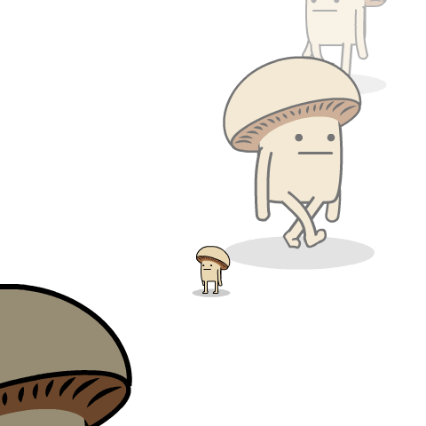
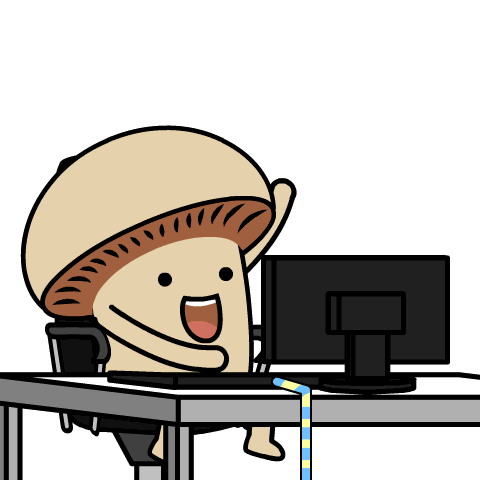
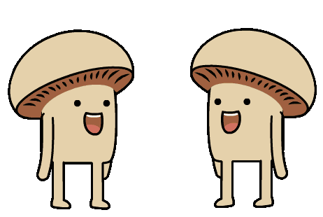

Process
Add your process notes, inspirations, and the story behind how you work.
P&P
Welcome to my process & projects page!
Here you will find some of my projects that i've worked on during my time as a Catapult in NextTech, aswell as how the process looked.




